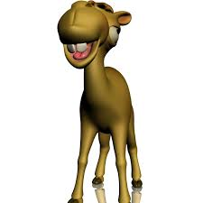

EQUIPO DIRECTIVO

Juan Verano
Electrónica
Santiago Crespo
Control

May-ling Moreno
Control

Jisel Rodriguez
Mecánica
Laura Pareja
Comunicaciones
Innovación en el mantenimiento ecológico
Somos un equipo de estudiantes universitarios apasionados por la innovación y la tecnología con la iniciativa de ofrecer una solución práctica para el corte de césped que crece entre los ladrillos por medio de la ingeniería, la robótica y la sostenibilidad.
Electrónica
Control
Control
Mecánica
Comunicaciones
Descubre cómo surgió la idea de GreenCut, las etapas clave en su desarrollo y los retos técnicos que enfrentamos para llegar a una solución sostenible y funcional.
Ver más detallesA partir de todo el proceso de diseño se contruyó el boceto final de GreenCut y se realizó el CAD en SolidWorks.
Averigua como se realizó toda la parte mecánica de GreenCut, la elección de componentes, el análisis por elementos finitos y la construcción física.
Ver más detallesAverigua como se realizó toda la parte mecánica de GreenCut, la elección de componentes, el análisis por elementos finitos y la construcción física.
Ver más detallesRemoción manual ineficiente y costosa de maleza en espacios públicos.
Desarrollar un robot autónomo que identifique y elimine maleza con precisión.
Diseño CAD, simulaciones FEA, programación embebida y control remoto.